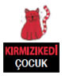

Samed Behrengi
Samed Behrengi (1939-1968) Tebriz’in Çerendâb mahallesinde (Güney Azarbaycan) doğdu. İlkokulu bitirdikten sonra Tebriz’de öğretmen okullarında öğrenim gördü. Köy okullarında öğretmenlik yaparken aynı zamanda Tebriz Üniversitesi İngiliz Dili ve Edebiyatı bölümünde derslere devam etti ve mezun oldu.
Azeri halk masallarından çok etkilenen Behrengi yayımladığı ilk kitabında bu masalları derledi ve daha sonra Farsça’ya çevirdi. Bu çalışmasıyla Tahran’daki edebiyat çevrelerinin dikkatini çekti. Eğitim sorunları üzerine yazdığı makale, sosyal sorunları gerçekçi bir biçimde ele aldığı çocuk hikâyeleri ve Azeri halk masalları derlemeleri ile yeni nesil yazarlar arasında yükselen bir değer olarak ününü artırdı.
Behrengi, Aras Nehri’nde boğularak yaşamını yitirdiğinde yalnızca yirmi dokuz yaşındaydı. Bunun bir kaza olmadığına inanılmaktadır.
Öğretmen, çocuk öyküsü ve masal yazarı, derleyici ve çevirmen olan Samed Behrengi, yalnızca İran edebiyatının değil dünya çocuk edebiyatının önemli yazarlarından birisidir. Pek çok dile çevrilen eserleri arasında Küçük Kara Balık,
Bir Şeftali Bin Şeftali, Kel Güvercinci ve Çıngıraklı Deve öne çıkmaktadır.
İlknur Özdemir
İstanbul’da doğdu. İstanbul Alman Lisesi’ni ve Boğaziçi Üniversitesi İşletme Bölümü’nü bitirdi. Almanca ve İngilizceden çok sayıda çevirisi ve “Senin Öykün Hangisi” adlı bir öykü kitabı vardır.
Çocuk kitabı çevirileri: Anton Çehov: Kaştanka-Marangozun Köpeği, Thomas Brezina: Perili Otelde Tatil, Max İntikam Peşinde, Gizli Görev (Sevimli Canavarlar Dizisi), Hans Magnus Enzensberger: Sayı Şeytanı, Florence Atwater, Richard Atwater: Boyacının Penguenleri, Andreas H. Schmachtl: Tilda Elmaçekirdeği Dizisi, Nick Butterworth: Triksi-Büyücünün Kedisi, Virginia Woolf: Yaşlı Kadın ve Papağan, Samed Behrengi: Küçük Kara Balık, Bir Şeftali Bin Şeftali, Kel Güvercinci, Çıngıraklı Deve, Sevgi Masalı, Tarhun.
